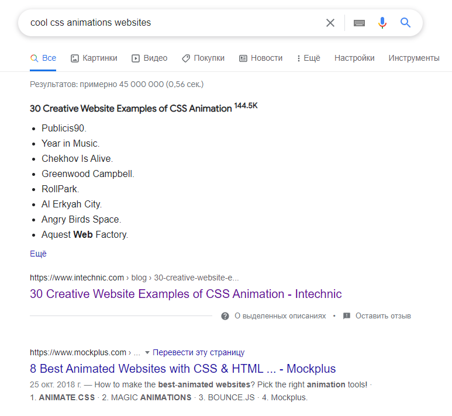

Что такое Анимация
Анимация - это оптическая иллюзия движения, которая возникает при достаточно быстрой смене статичных кадров.
 Гифка на вики с лицензией
Гифка на вики с лицензией
автор: Валерий Хаслер
Анимация - это оптическая иллюзия движения, которая возникает при достаточно быстрой смене статичных кадров.
Гифка на вики с лицензией
Это постепенный (как правило плавный) переход из одного визуального состояния в другое.
Всё, что угодно:) Любой элемент, то есть узел в DOM, представленный как бокс в раскладке. Можно анимировать текстовое содержимое, сами боксы, псевдоэлементы и т.д.
Список анимируемых свойств един и для CSS переходов и для CSS анимаций. Но он может меняться и поэтому лучше всего проверять каждое свойство отдельно. Можно смотреть Animation type в разделе Formal definition на MDN или в спеках.
Гуглите подборки анимаций. Это могут быть как портфолио дизайнеров, так и примеры на реальных сайтах.
